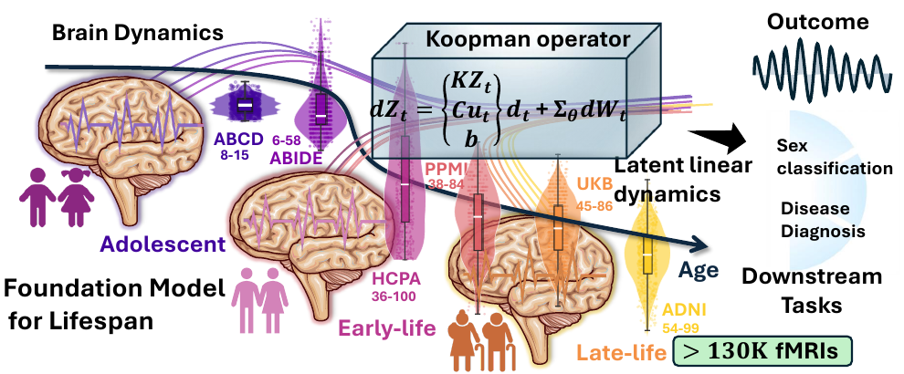
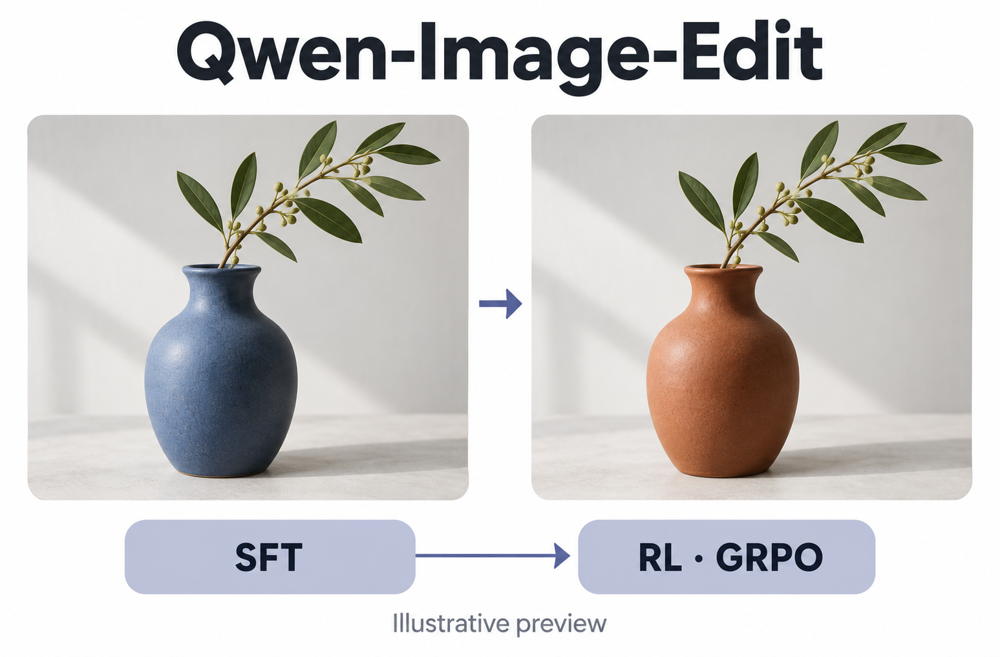
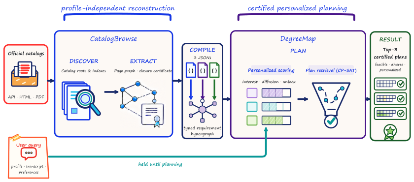
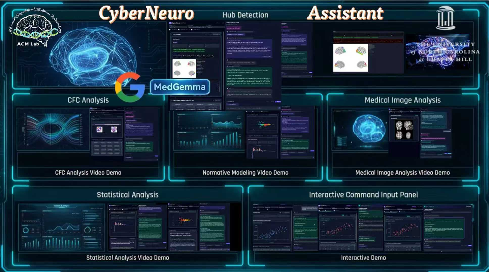

BrainMech — Brain Dynamics Across the Lifespan
A Koopman-structured fMRI foundation model for learning and analyzing latent brain dynamics.
My work: model pretraining, distributed training, and downstream transfer evaluation.
I want to build adaptive intelligence: systems that bring understanding and generation together, and adapt in real time through continuous interaction.
My work explores parts of this question through brain dynamics, controllable image editing, and agents that use structured knowledge.

A Koopman-structured fMRI foundation model for learning and analyzing latent brain dynamics.
My work: model pretraining, distributed training, and downstream transfer evaluation.

Improving instruction following and content preservation in image editing.
I lead SFT and RL (GRPO) post-training, with distributed training and evaluation pipelines.

Separating curriculum extraction from personalized, constraint-aware degree planning.
My work: agent coordination, knowledge graph design, and data collection and curation.

AI agents for brain-network analysis, evaluated on 500+ queries.
My work: planning agent design and agent harness development.
Object-centric physical reasoning with DINOv2 and slot attention.
Character-level RNNs on LaTeX algebraic geometry · June 2025.
Rating prediction on large datasets, with Y. Zhang, J. Wang, and R. Wang.
Exploring nonlinear methods for pattern classification.